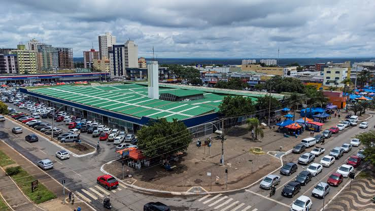

Feira Central da Ceilândia
📍 Localização: Ceilândia - DF

Ponto de Encontro e Tradição
A Feira Central de Ceilândia é um dos espaços comerciais e culturais mais tradicionais e pulsantes da região, famosa por sua diversidade de produtos, gastronomia típica nordestina e artesanato.